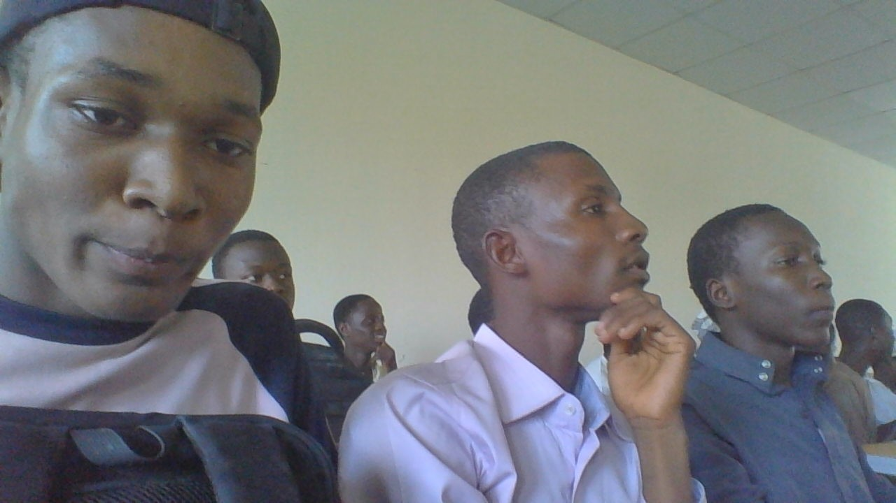

About Me
WELCOME TO MY WEBSITE
.
my name Abdulsalam S. Lawan, am 20-year-old with a penchant for embracing life's diverse offerings, stands as a shining example of this colorful mosaic. Hailing from a home filled with love and laughter, I shares his journey with two beloved sisters who have been his pillars of support and confidantes through life's twists and turns. Their bond, forged in the fires of shared experiences and unconditional love, serves as a constant source of strength and inspiration for Abdulsalam. But beyond the warmth of family ties lies deep affection for another species altogether—the graceful and enigmatic cat. With their independent spirit and playful demeanor, cats have found a special place in his heart, bringing joy and companionship to his days. Whether curled up with a book or engaged in a spirited game of chase, Abdulsalam finds solace in the presence of his feline friends. Yet, it is not just within the walls of his home that I passions thrive. A fervent sports enthusiast, he finds joy and fulfillment on the fields and courts where athleticism meets camaraderie. Football, with its pulsating energy and sense of unity, captures his imagination, allowing him to immerse himself fully in the thrill of the game. But I sporting pursuits extend far beyond the realm of football. With a deft hand and keen eye, he navigates the intricate world of table tennis, where agility and precision reign supreme. Each rally, a testament to his skill and determination, propels him closer to mastery of the sport. And then there is snooker, a game of strategy and finesse that beckons to its green baize table, where every shot is a symphony of calculation and execution. Here, amidst the soft clack of balls and the murmurs of spectators, he finds himself lost in the rhythm of the game, honing his skills with each precise stroke. That is why priortize building long-term relationships with our customers.our dedicated team is committed to delivering personalized attention, addressing your unique requirements, and excedding your expectations. At DOUBLE G AUTOS , we value intergrity, reliability and transparency.
About me.